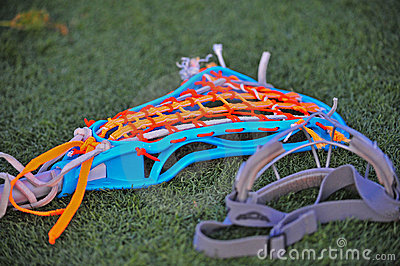
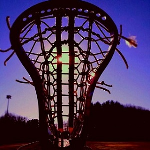

Lacrosse is a super fun highly active sport in which your goal is to get the ball into the net. During a game, 12 people will be on the field at once. The goalie, 4 attack (offense), 4 defense, and 3 midfielders. The goalie’s job is to protect the goal. The defense helps the goalie by protecting the goal, along with trying to stop their opponent. The attack try to get the ball and score on the opponent’s goal. The midfielders run up and down the whole field playing both defense and attack.
Other rules are, you are allowed to run behind the goal. Also when a shot is taken and the ball roles out of bounds, the person closest to it get the ball. The game always starts with and continues to perform a draw after a goal is made. In girls lacrosse there is no checking allowed. This is when you whack another person or person’s stick with your stick. You can receive penalties for checking in extremely harsh ways.
 When you play for school, you tryout and are tested to see what your skill levels are. Depending on your skill levels you are divided in Junior Varsity, and Varsity. Throughout the season you will compete against other teams in your state. Also depending on your coach you might play in out of state tournaments.
After school season is over, national tryouts will be held. This is when girls from all over your state come and tryout for a spot on the National Team. If you make the team there will be about 4 three hour practices, and one tournament. During the tournament your team will play other states national teams for one weekend. By playing for school and Nationals it allows for a really fun hobby.

Lindsey M.